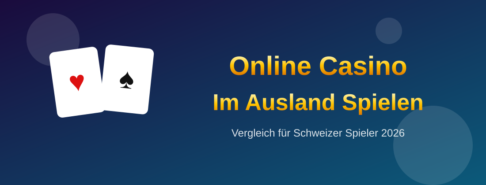

Online Casino: Spielen aus der Schweiz
Online Casino im Ausland spielen bedeutet, auf einer internationalen Plattform mit Lizenz aus Malta, Curaçao oder Gibraltar zu spielen statt bei einem konzessionierten Anbieter. Für Schweizer Spieler öffnet das den Zugang zu mehreren tausend Titeln, zu Live Tischen mit echten Croupiers und zu Spielfunktionen, die im konzessionierten Markt nicht verfügbar sind.
Im Ausland zu spielen ist sicher, solange man Plattformen wählt, die ordentlich lizenziert und gut reguliert sind. Auf dieser Seite zeigen wir, wie das Spielen auf internationalen Plattformen abläuft, welche Spielkategorien bereitstehen und wie die mobile Nutzung unterwegs funktioniert.

Top Schweizer Online Casinos & Sportwetten Anbieter
18+ · Glücksspiel kann süchtig machen. Links in dieser Demo sind Platzhalter.
Online Casino im Ausland spielen heisst, ein Konto bei einem international lizenzierten Betreiber zu führen und von der Schweiz aus auf dessen Angebot zuzugreifen. Gespielt wird am Rechner oder mobil, eingezahlt in Franken, Euro oder Krypto, und Gewinne fliessen per Karte, E-Wallet oder Kryptowährung zurück.
Der Unterschied zum konzessionierten Markt zeigt sich vor allem im Umfang: mehr Spielautomaten, mehr Live Tische, mehr Anbieterstudios und Funktionen wie Autoplay oder Bonuskauf. Da diese Plattformen unter anerkannten Lizenzen arbeiten, verläuft das Spiel auf einem gut gewählten Anbieter reibungslos und verlässlich.
Online Casino im Ausland spielen im Jahr 2026
Die Tabelle unten zeigt internationale Plattformen, auf denen Schweizer Spieler bequem spielen, mit ihren konkreten Merkmalen für das Spielerlebnis.
Die Tabelle hilft beim Vergleich von Katalogumfang, Live Angebot, App Verfügbarkeit und Sprachen.
Wer viel unterwegs spielt, achtet vor allem auf eine native App und eine stabile mobile Oberfläche.
Warum Schweizer Spieler im Ausland spielen
Für das Spielen auf internationalen Plattformen sprechen mehrere praktische Gründe:
- Deutlich mehr Titel: bis zu 3000 Spiele statt einer überschaubaren Auswahl.
- Grösseres Live Angebot: über hundert Tische mit echten Croupiers rund um die Uhr.
- Volle Spielfunktionen: Autoplay, Bonuskauf und Turniere ohne Einschränkungen.
- Mobile Nutzung: native Apps und optimierte Oberflächen für unterwegs.
- Kurze Auszahlungszeiten: Gutschriften oft noch am selben Tag.
Diese Punkte machen das Spielerlebnis abwechslungsreicher und flexibler.
Der Support auf Deutsch, Französisch oder Italienisch sorgt zudem dafür, dass Fragen ohne Sprachbarriere geklärt werden.
Ist es sicher im Ausland zu spielen?
Ja, im Ausland zu spielen ist sicher, solange man Plattformen wählt, die ordentlich lizenziert und gut reguliert sind. Die Lizenz verpflichtet den Betreiber zu geprüften Zufallsgeneratoren, verschlüsselten Zahlungen und nachvollziehbaren Auszahlungsregeln.
| Sicherheitsmerkmal | Worauf achten | Warum es zählt |
|---|---|---|
| Gültige Lizenz | MGA, Curaçao oder Gibraltar im Footer | Bestätigt regulierten Betrieb |
| Zertifizierte Spiele | Geprüfter Zufallsgenerator | Garantiert faire Ergebnisse |
| Veröffentlichte RTP Werte | Auszahlungsquote je Titel sichtbar | Zeichen für Transparenz |
| SSL Verschlüsselung | HTTPS in der Adresszeile | Schützt Daten und Zahlungen |
| Stabile Plattform | Kurze Ladezeiten, keine Abbrüche | Sorgt für ungestörtes Spiel |
Sind diese Punkte erfüllt, verläuft das Spielen ebenso komfortabel wie bei einem konzessionierten Anbieter.
Spielkategorien im Überblick
Internationale Plattformen gliedern ihr Angebot in klar getrennte Bereiche. Die Tabelle unten zeigt, was Schweizer Spieler erwartet.
| Spielkategorie | Beispiele | Min. Einsatz | Typische Sessiondauer |
|---|---|---|---|
| Spielautomaten | Sweet Bonanza, Book of Dead | 0.10 bis 0.50 CHF | Flexibel |
| Tischspiele | Roulette, Blackjack, Baccarat | 0.50 bis 5 CHF | Mittel |
| Live Casino | Live Roulette, Live Blackjack | 1 bis 10 CHF | Länger |
| Crash Spiele | Aviator, Plinko, Mines | 0.10 bis 1 CHF | Kurz |
| Game Shows | Crazy Time, Monopoly Live | 0.20 bis 5 CHF | Mittel |
| Video Poker | Jacks or Better, Deuces Wild | 0.25 bis 2 CHF | Flexibel |
Diese Übersicht erleichtert die Wahl je nach verfügbarer Zeit und Budget.
Beliebte Spiele und ihre Auszahlungsquoten
Beim Spielen im Ausland lohnt ein Blick auf die Auszahlungsquote, kurz RTP. Sie gibt an, welcher Anteil der Einsätze über einen langen Zeitraum an die Spieler zurückfliesst, und wird von seriösen Anbietern offen ausgewiesen.
Die Volatilität beschreibt ergänzend das Auszahlungsmuster. Titel mit niedriger Volatilität liefern häufige kleine Gewinne und eignen sich für längere Sessions, während hohe Volatilität auf seltenere, dafür grössere Beträge hinausläuft.
| Spieltitel | Anbieter | RTP | Volatilität | Max. Gewinn | Besonderheiten |
|---|---|---|---|---|---|
| Blood Suckers | NetEnt | 98.00% | Niedrig | 1000x | Ideal für lange Sessions |
| Dead or Alive 2 | NetEnt | 96.82% | Hoch | 10000x | Sticky Wilds Bonus |
| Sweet Bonanza | Pragmatic Play | 96.51% | Hoch | 21000x | Cluster Pays |
| Gates of Olympus | Pragmatic Play | 96.50% | Hoch | 5000x | Tumble Reels |
| Book of Dead | Play'n GO | 96.21% | Hoch | 5000x | Expandierende Symbole |
| Starburst | NetEnt | 96.09% | Niedrig | 500x | Schnelle Runden |
| Gonzo's Quest | NetEnt | 95.97% | Mittel | 2500x | Avalanche Funktion |
Werden diese Werte offen genannt, spricht das klar für einen transparenten Betreiber.
Live Casino mit echten Croupiers
Das Live Casino ist einer der grössten Vorzüge beim Spielen im Ausland. Über hundert Tische mit echten Croupiers stehen bei den führenden Anbietern rund um die Uhr bereit, gestreamt in hoher Bildqualität aus professionellen Studios.
Neben den Klassikern Roulette, Blackjack und Baccarat finden sich Game Shows wie Crazy Time oder Monopoly Live. Der Chat mit dem Croupier und den Mitspielenden bringt eine Atmosphäre, die dem Besuch in einer echten Spielbank sehr nahe kommt.
Mobil spielen unterwegs
Praktisch alle internationalen Plattformen sind für Smartphone und Tablet optimiert. Manche Anbieter stellen eine native App für iOS und Android bereit, andere setzen auf eine Web App, die ohne Installation direkt im Browser läuft.
Der Funktionsumfang bleibt dabei identisch: voller Spielkatalog, Live Tische, Kassenbereich und Support. Kurze Ladezeiten und eine übersichtliche Bedienung mit dem Daumen sind die wichtigsten Qualitätsmerkmale für unterwegs.
Boni beim Spielen im Ausland
Internationale Anbieter begleiten das Spiel mit laufenden Aktionen statt nur einem einmaligen Willkommenspaket.
| Bonusart | Typischer Wert | Umsatzbedingung | Häufigkeit |
|---|---|---|---|
| Willkommensbonus | 100% bis 200% | 30x bis 40x | Einmalig |
| Freispiele | 50 bis 200 Spins | 30x | Regelmässig |
| Reload Bonus | 50% bis 100% | 35x | Wöchentlich |
| Cashback | 5% bis 20% | Oft keine | Wöchentlich |
| Turniere | Preispools und Freispiele | Keine | Laufend |
Turniere und wöchentliche Aktionen halten das Spielerlebnis über längere Zeit abwechslungsreich.
Zahlungsmethoden und Auszahlungen
Für Ein- und Auszahlungen stehen mehrere Wege offen, die sich vor allem im Tempo unterscheiden.
| Zahlungsmethode | Einzahlungsdauer | Auszahlungsdauer | CHF Unterstützung |
|---|---|---|---|
| Kryptowährungen | 10 bis 30 Minuten | 10 Minuten bis 2 Stunden | Umgerechnet |
| Skrill und Neteller | Sofort | Bis 24 Stunden | Ja |
| Visa und Mastercard | Sofort | 1 bis 3 Tage | Ja |
| Revolut und Neon | Sofort | Bis 24 Stunden | Ja |
| Banküberweisung | 1 bis 2 Tage | 2 bis 5 Tage | Ja |
Wer die Verifizierung gleich nach der Anmeldung erledigt, spart bei der ersten Auszahlung wertvolle Zeit.
So spielt man komfortabel im Ausland Casino
Für ein reibungsloses Spielerlebnis lohnt sich der Blick auf einige praktische Punkte.
- Gültige Lizenz der MGA, von Curaçao oder Gibraltar
- Grosser Katalog mit Titeln bekannter Studios
- Live Casino mit ausreichend Tischen zu den bevorzugten Spielzeiten
- Native App oder gut funktionierende Web App für unterwegs
- Konto in Franken und Support in einer Landessprache
- Kurze und klar kommunizierte Auszahlungszeiten
Fazit
Online Casino im Ausland spielen eröffnet Schweizer Spielern einen Katalog mit mehreren tausend Titeln, ein umfangreiches Live Casino mit echten Croupiers und volle Spielfunktionen, ergänzt durch komfortable mobile Nutzung.
Das Spielen auf diesen Plattformen ist sicher, wenn man einen ordentlich lizenzierten und gut regulierten Anbieter wählt. Wer auf Lizenz, Katalogumfang, mobile Bedienung und kurze Auszahlungszeiten achtet, findet eine Plattform, die im Alltag rundum überzeugt.
FAQ zum Spielen in ausländischen Online-Casinos für Schweizer
Wie läuft das Spielen in einem Online Casino im Ausland ab?
Nach der Anmeldung wählt man die Währung, zahlt per Karte, E-Wallet oder Kryptowährung ein und öffnet den Spielkatalog. Gespielt wird direkt im Browser oder in der App, ohne Download einzelner Titel, und Gewinne landen nach abgeschlossener Verifizierung auf dem gewählten Auszahlungsweg.
Kann ich im Ausland Casino auch mobil unterwegs spielen?
Ja, praktisch alle internationalen Plattformen sind für Smartphone und Tablet optimiert. Manche Anbieter stellen eine native App für iOS und Android bereit, andere eine Web App im Browser. Der Funktionsumfang bleibt identisch, inklusive Live Tischen, Kassenbereich und Support.
Welche Spiele stehen beim Spielen im Ausland zur Verfügung?
Der Katalog umfasst in der Regel mehrere tausend Spielautomaten, dazu Roulette, Blackjack und Baccarat, über hundert Live Tische mit echten Croupiers, Game Shows wie Crazy Time sowie Crash Spiele wie Aviator. Funktionen wie Autoplay und Bonuskauf sind dabei uneingeschränkt verfügbar.